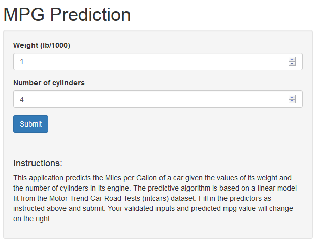

When purchasing a used car, it can be very difficult to predict its miles per gallon based on the limited information available.
MPG Predictor
Developing Data Products - Course Project Part 2
Peter Randazzo
The problem
mpg ~ wt + cyl
As the weight and cylinder count increase, MPG decreases

The solution
Using the weight of the car and the number of cylinders of the car, we can predict its likely miles per gallon using historical auto data available in the R package.
Try it @ raz2raz.shinyapps.io/part1
